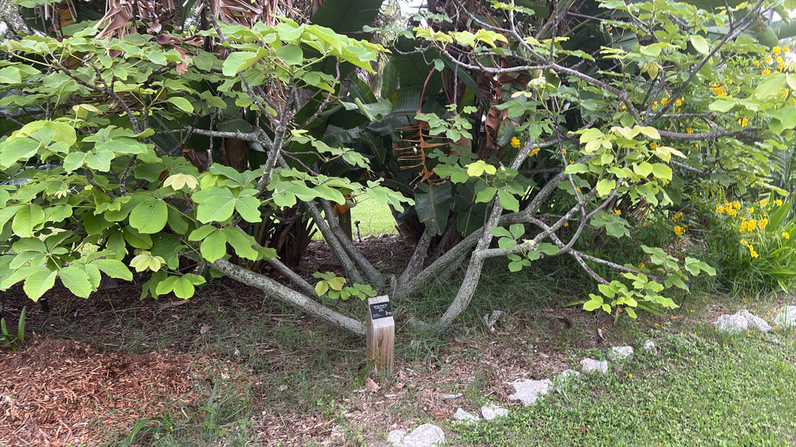

- Flowers on bare branches — the tree drops all its leaves before blooming in spring, so the flowers have nothing to compete with.
- Each flower contains roughly 400 stamens. The Aztec name for the tree, Xiloxóchitl, means Cornsilk Flower. The Spanish name Cabellos de Ángel — Angel Hair — refers to the same thing.
- The white-flowered variety (var. album) here at the park is less common than the typical red-pink form. The trunk swells at the base to store water, the same strategy used by the Silk Floss Tree and Kapok just down the path.
- For most of the year it is hemmed in on Bird of Paradise Island by Giant Bird of Paradise clumps and a Yellow Elder. In bloom, it is suddenly the most noticed tree on the island.
Non-native. Native to dry and rocky terrain of southern Mexico, El Salvador, Guatemala, and Honduras, where it grows in seasonally dry tropical forest. A member of Malvaceae — the same subfamily as the Silk Floss Tree, Kapok, and African Baobab elsewhere in the park.
- The Shaving-Brush Tree drops its leaves entirely before flowering in spring, so the blooms appear on bare, gnarly branches with nothing to obscure them — a deliberate-looking display that is entirely natural.
- The white-flowered var. album here is the less common form. The standard species blooms in red-pink; white-flowering specimens are rarer in cultivation and carry a more ethereal quality.
- The swollen base of the trunk stores water — the same adaptation used by the Silk Floss Tree and Kapok elsewhere in the park. All three are members of the same subfamily within Malvaceae, previously classified as their own family, Bombacaceae.
- For most of the year this tree is easy to miss. It sits on Bird of Paradise Island, hemmed in by large clumps of Giant Bird of Paradise and a Yellow Elder that competes for the same space — not an easy situation for a tree that needs light. When it blooms, though, the bare branches covered in white brush flowers tend to stop people in their tracks. It gets its smiles in spring and earns them.
The flowers open primarily at night and are visited by bats and moths, which are the primary pollinators in native habitat. Bees and hummingbirds work the flowers during daylight hours as well, but the tree is structured for nocturnal visitors — abundant nectar and flowers positioned at branch ends for easy access by hovering animals.
Seed pods produce kapok-like cottony fiber that disperses on the wind. Birds collect the floss for nest lining.
As part of the park's Malvaceae cluster alongside the Silk Floss Tree and Kapok, this tree contributes to a genuine bat-pollination story that spans three specimens — a themed connection worth noting on the website.
Appear in spring, on bare leafless branches before or as new leaves emerge. Each flower is approximately 6 inches across with roughly 400 long, slender stamens — white in the var. album form. The shaving-brush resemblance is exact and unmistakable. Pollinated primarily by bats and moths at night; bees and hummingbirds visit by day.
Seed pods produce kapok-like cottony white fiber. When pods split, the floss carries seeds on the wind.
New leaves emerge bright red and mature to green. Palmately compound, with 5–7 leaflets. The tree is fully deciduous — bare during the dry winter season and during flowering.
Gray-green, with distinctive swelling at the base that stores water. Striped with greens, yellows, browns, and white in the wood grain. Young specimens have a dramatically swollen, melon-like caudex.
The bare-branch flowering in spring is the signature event — large white brush-like flowers on naked branches are visible from some distance. Year-round, the swollen gray-green trunk base and palmately compound leaves identify the tree. New red foliage in spring is a secondary marker.
This isn't a food plant here, though some food uses are documented in its native range.
No significant toxicity is documented for people or dogs; as a general precaution, avoid eating any part.
NOMENCLATURE: Shaving-Brush Tree was historically placed in Bombacaceae, now Malvaceae (subfamily Bombacoideae).

- © Randall Carter (CC-BY-NC), via iNaturalist